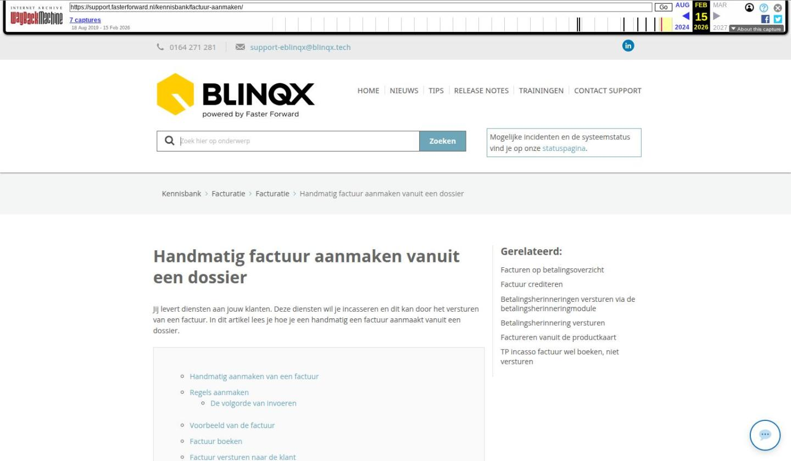

Handmatig factuur aanmaken vanuit een dossier

Tekstinhoud
Handmatig factuur aanmaken vanuit een dossier
Jij levert diensten aan jouw klanten. Deze diensten wil je incasseren en dit kan door het versturen van een factuur. In dit artikel lees je hoe je een handmatig een factuur aanmaakt vanuit een dossier.
Handmatig aanmaken van een factuur
Regels aanmaken
De volgorde van invoeren
Voorbeeld van de factuur
Factuur boeken
Factuur versturen naar de klant
Factuur handmatig naar de klant verzenden
Factuur verwijderen
Handmatig aanmaken van een factuur
Een nieuwe factuur aanmaken in een dossier kan via het tabblad Financieel. Op deze pagina wordt het standaard overzicht getoond met de facturen uit het dossier. Er kunnen middels het plusicoon linksboven nieuwe facturen worden aangemaakt.
Er verschijnt dan een invoerveld waar de gegevens van de factuur ingevuld moeten worden.
Hieronder volgt een algemene uitleg uitleg over de invoervelden. Alle invoervelden zijn te tonen op de factuur door middel van tags.
VELDNAAM OMSCHRIJVING
Factuurdatum Hier komt standaard de datum van vandaag te staan. Uiteraard is deze datum ook te vervangen door een andere datum (intypen of met behulp van het kalender-icoontje)
Vervaldatum Deze zal automatisch gevuld worden aan de hand van de factuurdatum + betaaltermijn en hoeft dus niet handmatig gevuld te worden.
Template Standaard wordt de laatst gebruikte template geselecteerd. Handmatig zijn alle andere factuur templates te selecteren.
Status Dit veld staat standaard op ‘Nieuw’, dit is niet te wijzigen. Dit veld is aan te passen met behulp van de workflow, of indien deze niet aanwezig is, handmatig. Indien een blauw pijltje zichtbaar is achter de status kan de status alleen worden gewijzigd aan de hand van de workflow.
Type Geeft aan voor wie de factuur bestemd is. Er kan gekozen worden tussen ‘Persoon’ en ‘Organisatie’. Afhankelijk van de keuze, veranderen de invulvelden onder ‘Type’.
‘Persoon’: Particuliere klant uit het dossier is te selecteren
‘Organisatie’: Zakelijke klant uit het dossier is te selecteren
Eerste persoon / tweede persoon / Organisatie De personen/organisaties uit het dossier zijn te selecteren.
Product Een product uit het dossier kan geselecteerd worden. De factuur wordt aan dit betreffende product gekoppeld. Dit is handig voor het overzicht! Het product dient wel ingesteld te zijn voor de facturatie.
Betaalwijze Standaard kan gekozen worden uit ‘Automatische incasso’, ‘Overschrijving’ en ‘Notaris’.
Betaaltermijn Kies hier voor de betaaltermijn van de factuur. Invoer van een waarde in dit veld zal ervoor zorgen dat ook de Vervaldatum gevuld wordt (volgens de formule factuurdatum + betaaltermijn).
LET OP: Indien de Betaalwijze ‘Automatische incasso’ is, dient dit veld gevuld te worden met ‘0’. Als dit niet gedaan wordt, kan de incasso niet automatisch via eBlinqx gaan!
Omschrijving Een eigen omschrijving voor de factuur. Deze kan gebruikt worden voor op de factuur.
Wanneer alle velden gevuld zijn, kan de factuur worden opgeslagen. Na opslaan wordt de eerste factuurregel zichtbaar.
Regels aanmaken
Het aanmaken van de regels van een factuur gaat als volgt: Allereerst dient het product opgezocht te worden. Een aantal velden zijn bewerkbaar en een aantal andere worden automatisch berekend, zoals het BTW- bedrag.
De volgorde van invoeren
Artikel
Door het invoeren van een letter of een productcode kan het artikel/product geselecteerd worden met behulp van de pijltjestoets op het toetsenbord en vervolgens met de ENTER toets. Na het selecteren zullen automatisch de ingestelde verkoopprijs gegevens worden geladen uit het product. Met de TAB toets kan tussen de verschillende invoervelden gesprongen worden.
Productcode zoeken:
De productcodes vind je door op het wijzigingsicoon te klikken bij het desbetreffende offertedeel. De productcode staat dan als eerst in het veld ‘product’. Of door links in het menu naar ‘Producten – Productbeheer’ te gaan en daar het desbetreffende product op te zoeken.
Een andere optie is om in de factuur in het veld ‘Artikel’ een deel van de naam van het product te typen. Vervolgens selecteer je het juiste artikel door gebruik te maken van de pijltjestoetsen op jouw toetsenbord.
Artikelomschrijving
De omschrijving wordt automatisch gevuld op het moment dat het artikelnummer wordt geselecteerd. Deze kan vervolgens handmatig worden aangepast.
Aantal
Het aantal artikelen dat gefactureerd wordt. Na het invullen van de ‘Verkoopprijs’ zal het ingevulde ‘Aantal’ vermenigvuldigd worden om tot een totaalprijs te komen.
BTW-Code
Door het invullen van een percentage zal er een BTW-code getoond worden. Deze kan vervolgens geselecteerd worden met behulp van de pijltjestoetsen en de ENTER toets.
Kostprijs
Optioneel om te vullen. Als deze wordt gevuld, kan het volgende veld: marge, worden gebruikt
Marge (%)
De marge kan gebruikt worden als de kostprijs is gevuld. Een marge van 200 op een kostprijs van 25 euro geeft dus een verkoopprijs van 75 euro.
Verkoopprijs
eBlinqx checkt niet automatisch of de kostprijs, marge en verkoopprijs met elkaar kloppen, als de berekende verkoopprijs handmatig wordt veranderd.
Regel bijvoegen
Ga dan in het veld van ‘Verkoopprijs’ staan en druk vervolgens op de ENTER toets.
Regel verwijderen
Een regel verwijderen: met F2 op uw toetsenbord kunt u ingevoerde regels verwijderen. Hiervoor dient de cursor in een willekeurig veld van de desbetreffende regel te gaan staan. De regel zal grijs worden en er zal een streep door de tekst komen. Met de ENTER toets kan een nieuwe regel worden toegevoegd. De volgende keer dat je deze (opgeslagen) factuur opent, zal de verwijderde regel niet meer zichtbaar zijn.
Gereed!
Wanneer alle regels zijn ingevoerd kan de factuur worden opgeslagen.
Voorbeeld van de factuur
Na het opslaan kan een een preview van de factuur getoond worden middels het printericoon linksboven. Naast het printericoon staat het kopie-icoon. Middels deze knop kan een kopie van de betreffende factuur worden afgedrukt. De factuur kan ook geprint worden in het algemene factuur overzicht op het tabblad “Financieel” middels het icoon achter de facturen.
Factuur boeken
Het boeken van de factuur doe je via de workflow of handmatig. Handmatig boeken is alleen mogelijk indien er geen workflow onder de factuur aanwezig is. Onderstaand icoontje kan dan gebruikt worden om de factuur te boeken. LET OP: Wanneer de factuur geboekt wordt, zal een factuurnummer worden toegekend en is verdere bewerking niet meer mogelijk.
Factuur versturen naar de klant
Een factuur kan verstuurd worden per post of per e-mail. Wanneer de factuur per post verstuurd moet worden kan de factuur afgedrukt worden via eBlinqx. Hiervoor kan met behulp van de workflow een PDF gegenereerd worden in het dossier. De factuur kan ook per e-mail verzonden worden met behulp van de workflow.
Wanneer de klant meerdere e-mailadressen heeft en je wilt de factuur naar een specifiek e-mailadres versturen dan kan je dit bij het betreffende e-mailadres aangeven. Om dit te doen ga je naar het klantdossier – bij Partijen klik je op de betreffende persoon – achter het e-mailadres klik je op het wijzigingsicoon – bij omschrijving vul je Factuur in.
Factuur handmatig naar de klant verzenden
Het is mogelijk om de factuur nogmaals naar de klant handmatig te versturen. Dit kan je middels de e-mail doen. Binnen het dossier kies helemaal rechtsbovenin voor ‘E-mail aanmaken’
Er komt dan een scherm zichtbaar om de e-mail op te stellen. Links klik je op de knop ‘Documenten uit dossier toevoegen’.
In de zwarte balk kies je voor tabblad Factuur. Via de checkbox voor de factuur selecteer je factuur die je wilt toevoegen aan de e-mail. Vervolgens sla je op door middel van het opslaanicoon. Hier worden alleen de facturen getoond die geboekt zijn.
Je stelt de e-mail verder op om deze vervolgens naar de klant te sturen.
Factuur verwijderen
Nadat een factuur geboekt is, is het niet mogelijk om de factuur te verwijderen. Om dit boekhoudkundig in orde te maken zal je een creditfactuur aan moeten maken. Ook kan je het boekhoudkundig verder verwerken. In deze handleiding lees je er meer over.
Laatste update: 15 oktober 2025
Tagged: facturen
Was deze informatie nuttig?
Ja Nee